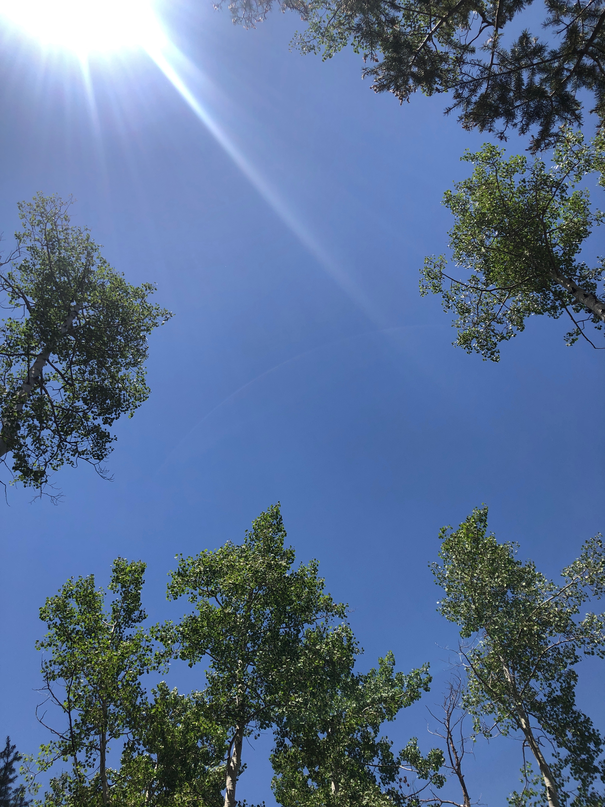

A.P. Bergeron / Spencer Friedman / Gordon Fry / Glen Whitehead
Chirr
This composition was created through a process of environmental improvisation and field recordings. Each member contributed material resulting from explorations of their local geographies contemplating serendipity, scale, proximity and distance between themselves, their surroundings, and each other. The theme of leisure became an added counterweight as an act of possibility and privilege, and a lens through which to view and acknowledge (musically and otherwise) our gratitude for being here.
40°44'48.0"N 73°55'20.9"W
Spencer Friedman (guitar, field recordings)
Recordings made in Queens, New York City, during the city's 8pm curfew in June 2020. The unprecedented energy in this moment -- created by bodies and voices, indoors for three months prior -- pulsed through the air and vibrated the ground. After 8pm the streets outside my window were largely silent, an altogether surreal experience.
45°20'38.3"N 71°52'19.7"W
A.P. Bergeron (vocals, field recordings, production)
All featured sounds captured and performed along the banks of the mighty Massawippi River, located in the Estrie region of Québec. Often waking early and venturing out among the many elder bridges and moss covered stones of my riverside home -- mind brimming with collective fears -- I would sing for momentary relief.


38°53'37.1"N 105°56'25.2"W
Glen Whitehead (trumpet, field recording)
Near the crest of Trout Creek Pass in Hartsel, Colorado at 9,500 feet amidst the interlaced organism of an Aspen grove, a lone House Wren calls insistently for echo. The wind rips through the shallow rooted trees, bows bend to the weight of swirling air, leaves shimmer in the sun. Like two sides of a coin dancing on axis, Aspens are unique in their design to absorb sunlight on both sides of their leaves, maximizing photosynthesis efficiency - a natural ballet of innovation.



27°53'15.1"N 82°01'33.1"W
Gordon Fry (percussion, field recordings)
Near the entrance to the abandoned Nichols phosphate mine in Mulberry, Florida. Nichols is one of a few ghost-towns found in an area east of Tampa on the edge of central Florida called Bone Valley. Mine towns like Nichols used to riddle this desolate landscape but as automobiles and roads became more established, people no longer needed to live near the mines and the towns quickly vanished. Nichols is unique because while the only relic of the town is a lonely post office, most of the mine still stands. Even though the world seems to be getting smaller, I can’t help but feel there is a wildness that persistently pervades. I recorded the remnants of a thunderstorm dripping on my snare drum, but I was reminded that my presence was not essential: this place existed before the mine was there and it would continue to exist after it.


27°49'15.3"N 81°58'02.1"W
Gordon Fry (percussion, field recordings)
At Mt. Olive Cemetery in Mulberry, Florida. I found this cemetery with nothing around it off a lonely road. Walking around I saw some recent graves mixed with some over 100 years old. It was extremely quiet. I recorded some cymbal sounds to the background of cicadas in nearby live oak and thought about how different things must have been back then. I also looked around at the landscape and wondered if some things might have been the same.


go back to the barn
explore the map